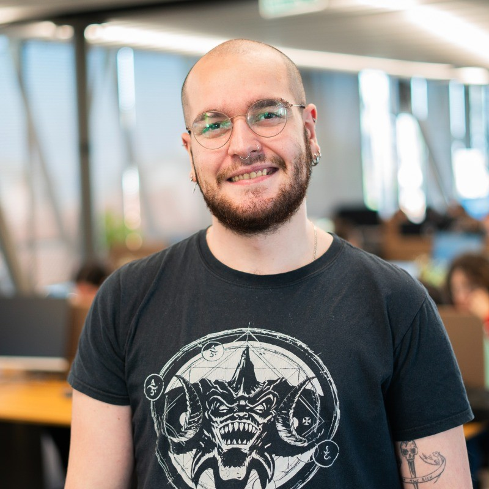

mustafalieren@proton.me
mobile: +90 537 029 8131
nationality: Turkish
# mustafa ali eren
## executive summary
* 3 years of experiense as a Frontend Developer
* Hand-on experience in React, Typescript
* Proficient in JavaScript, Tailwind, Git
## personal information
* born in 1999, balıkesir, turkey
* xinacris.github.io
* Completed mandatory military service in the Republic of Turkey
## working experience
#### Papara (Software Engineer (Frontend), 2023/08 - 2025/07)
* Collaborated effectively with team members to deliver high-quality frontend solutions.
* Continuously improved my software development skills through hands-on experience and learning.
#### Papara (Software Developer Intern (Frontend), 2022/11 - 2023/07)
* Gained practical experience in frontend development.
* Enhanced my problem-solving skills through real-world projects.
#### Migros (Frontend Developer Intern, 2022/07 - 2022/08)
* Learned Angular framework and applied it in developing dynamic web applications
## education
* Bachelor of Computer Science, Balıkesir University (Sept 2017 - July 2023)
* Politechnika Czestochowska (Erasmus Exchange Program, Oct 2021 - Febr 2022)
## extracurricular activities
* Founded a science fiction and fantasy literature student club at university
## technical skills
* React
* Angular
* JavaScript
* TypeScript
* Tailwind
* Git
## misc. information
#### Availability
* Available for work
#### Languages
* English (Advanced)
* Turkish (Native)
#### Hobbies
* Reading
* Video games
* Hiking
## references
#### Onur Yılmaz
* Principal Software Engineer at Papara
* +90 505 410 70 11
* Available at Weekdays: 9:00-18:00
#### Caner Aşa
* Senior Software Engineer at Papara
* +90 538 609 29 35
* Available at Weekdays: 9:00-18:00